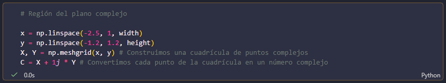
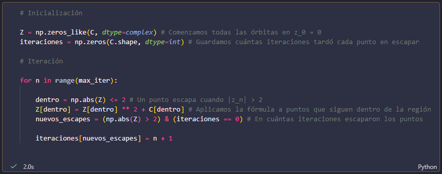
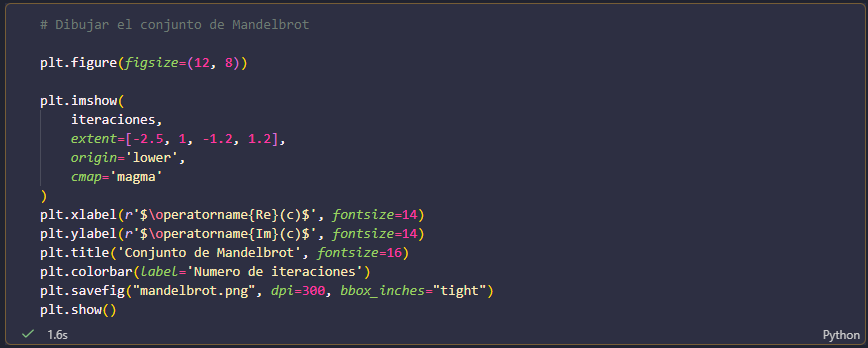
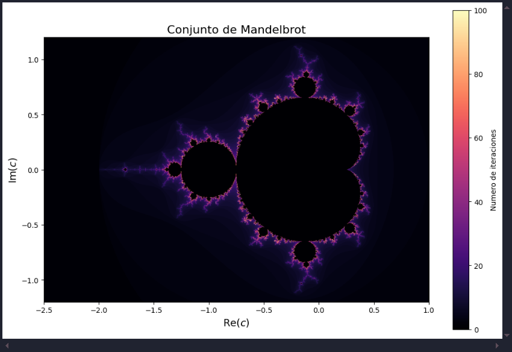
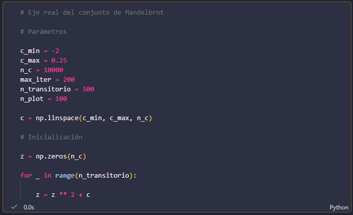
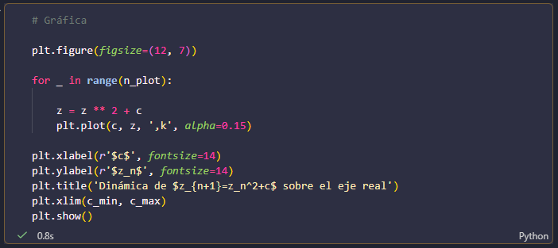
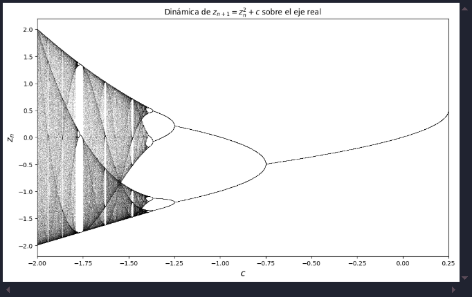

Consideremos la familia cuadratica $$z_{n+1}=z_n^2+c$$ donde \(z\) y \(c\) son números complejos. Para construir el conjunto comenzamos cada órbita con \(z_0=0\) y repetimos la iteración. Para cada valor de \(c\), observamos si la órbita permanece acotada o si escapa. Utilizamos el criterio de escape \(|z_n|>2\). Además, registramos el número de iteraciones que necesita cada punto para escapar y utilizamos esta información para construir la imagen. De esta manera podemos visualizar qué valores de \(c\) producen órbitas acotadas y cuáles producen órbitas que escapan.




Cada punto de la imagen representa un valor diferente de c en el plano complejo. La estructura que aparece es el resultado de estudiar el comportamiento de la órbita asociada a cada uno de estos valores.
Para comparar el conjunto de Mandelbrot con el mapeo logístico, nos interesa particularmente lo que ocurre cuando \(c\) es real. En este caso la iteración se convierte en $$z_{n+1}=z_n^2+c, \qquad z_0=0$$


Al estudiar las órbitas para distintos valores reales de \(c\), obtenemos una estructura muy similar a la observada en el diagrama de bifurcación del mapeo logístico.

Conexión matemática entre Mandelbrot y el mapeo logístico
La semejanza entre las dos gráficas no es una coincidencia. Existe una transformación que relaciona directamente el mapeo logístico con la familia cuadrática.
Partimos del mapeo logístico $$x_{n+1}=a x_n(1-x_n)$$ y hacemos el cambio de variable $$z_n=a\left(\frac{1}{2}-x_n\right).$$
Además, si queremos que \(z_0=0\), basta tomar \(x_0=\frac12\), que es precisamente la condición inicial que utilizamos en nuestras simulaciones.
Sustituyendo este cambio de variable en el mapeo logístico, se obtiene $$z_{n+1}=z_n^2+c$$
donde el parámetro \(c\) está relacionado con \(a\) mediante
Por lo tanto, las dos familias dinámicas están relacionadas matemáticamente. Esto explica por qué aparecen estructuras semejantes en sus diagramas: los puntos fijos, las órbitas periódicas, las duplicaciones de periodo y las regiones caóticas aparecen en ambas representaciones.
En particular, para los valores de \(a\) que estudiamos, al aumentar \(a\) el valor correspondiente de \(c\) disminuye. Por ejemplo,
Por esta razón, al comparar directamente las gráficas, una de ellas puede aparecer invertida horizontalmente. Además, como \(z_n=a\left(\frac12-x_n\right)\), la coordenada vertical también cambia de orientación. La apariencia reflejada de los diagramas es, por tanto, consecuencia de la transformación matemática.
Esta relación muestra que el comportamiento que observamos en el mapeo logístico forma parte de una estructura más amplia dentro del estudio de sistemas dinámicos. Dos ecuaciones que inicialmente parecen diferentes pueden describir esencialmente la misma dinámica después de realizar un cambio de variables.